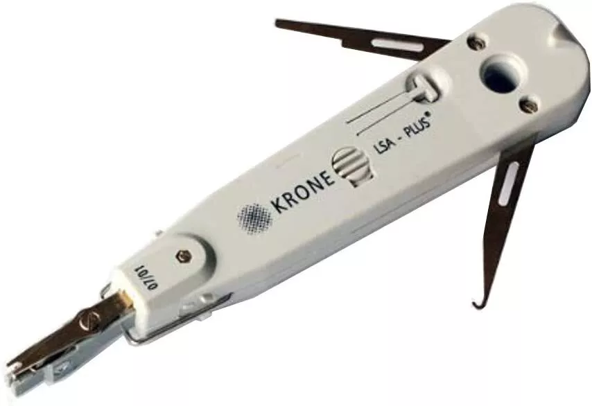

The punch down tool comes in several types, such as:
Standard Punch Down Tool
.jpg)
The standard punch down tool is the most prevalent tool in network installations, featuring a handle and a detachable blade for inserting and cutting wires into IDCs. Its spring-loaded mechanism delivers consistent pressure, ensuring secure connections. This tool is ideal for general tasks on patch panels, keystone jacks, and terminal blocks, making it a staple for any technician's toolkit. Its ergonomic design provides comfort during extended use, and its durable construction ensures long-lasting performance. The standard punch down tool is a reliable and affordable choice for both professionals and DIY enthusiasts.
Impact Punch Down Tool

The impact punch down tool is a sophisticated option equipped with an adjustable impact mechanism, allowing for precise control over the force applied during wire termination. This control is crucial for achieving proper wire seating and clean cuts, particularly in installations with high wire density or challenging materials. The impact punch down tool excels in environments demanding accuracy and efficiency, making it a valuable asset for professional installations. Its adjustable impact settings accommodate various wire gauges and connector types, ensuring optimal performance in every scenario.
Non-Impact Punch Down Tool

The non-impact punch down tool is a straightforward and user-friendly option, lacking the spring-loaded or impact mechanisms found in other models. It relies on manual pressure for wire insertion and cutting, making it suitable for smaller-scale tasks or when working with softer materials. Despite its simplicity, the non-impact punch down tool remains a reliable and cost-effective solution for basic network installations. Its compact size and lightweight design make it easy to maneuver in tight spaces, and its straightforward operation requires minimal training.
Multifunction Punch Down Tool
The multi-function punch down tool is a versatile solution that combines the functionality of multiple tools into one. In addition to wire termination, it offers features like wire stripping, cutting, and crimping. This all-in-one design is perfect for technicians who require a single, portable tool for various cable management tasks. The multi-function punch down tool enhances efficiency and simplifies the installation and maintenance process, saving valuable time on the job. Its interchangeable blades and dies further expand its capabilities, making it adaptable to a wide range of wire types and connectors.
110/66 Blade Punch Down Tool

The 110/66 blade punch down tool is a specialized tool designed to accommodate both newer and older installations. It features interchangeable 110 and 66 blades, catering to different types of blocks and jacks. The 110 blade is commonly used in modern network setups, while the 66 blade is often necessary for working with legacy telephone systems. This adaptability makes the 110/66 blade punch down tool indispensable for technicians who encounter a variety of termination blocks in their work. Its high-quality blades ensure clean and precise cuts, minimizing the risk of signal degradation or connection failures.